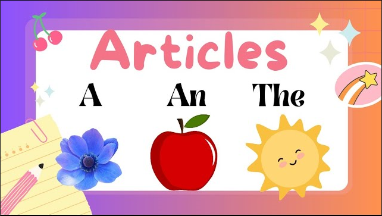

GRAMMER ARTICLES
GRAMMER ARTICLES
Articles
Article, a grammer element used to indicate definiteness or indefiniteness. It is also a piece of nonfictinal prose that is
an independent part of a publication.
There are two types of articles.
- Definite article
- Indefinite article
Definite article
Definite article (the) are used to identify a specific noun or group of nouns.
- 1-The books assigned for this class are very useful.
- In this sentence, "books" is a plural, countable noun. It is also specific because of the phrase “for this class.” The writer and reader (or speaker and listener) know which books are being referred to.
- 2-The advice you gave me was very helpful.
- In this sentence, "advice" is an uncountable noun. However, it is specific because of the phrase “you gave me.” It is clear which piece of advice was helpful.
Indefinite article
Indefinite articles (a, an) are used to identify a general noun or a noun whose identity is unknown. "A" and "an" are used with singular countable nouns when the noun is nonspecific or generic.
Examples:
- 1-I do not own a car.
- In this sentence, "car" is a singular countable noun that is not specific. It could be any car.
- 2-I would like to eat an apple.
- In this sentence, "apple" is a singular countable noun that is not specific. It could be any apple.

PROFILE CARD